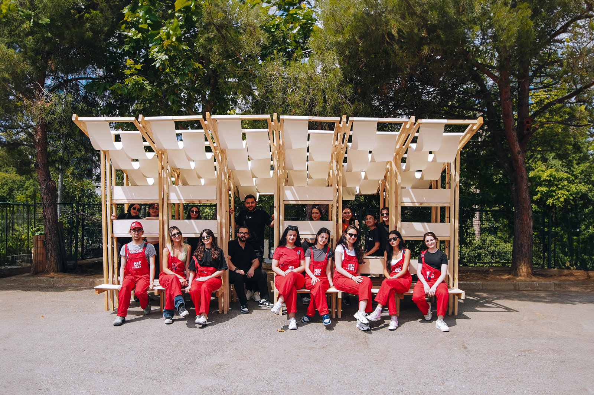
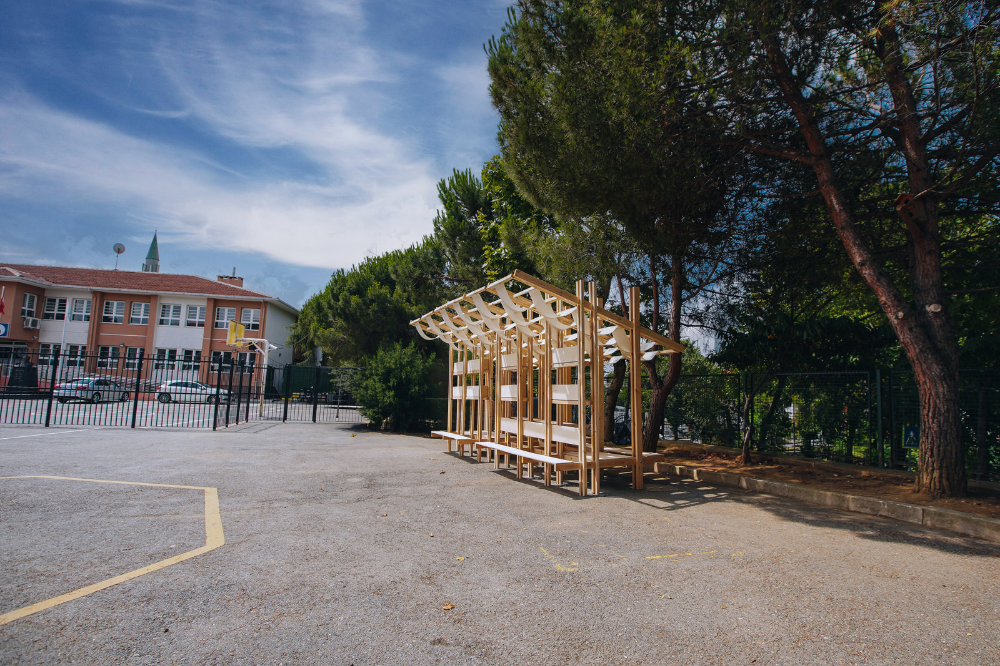
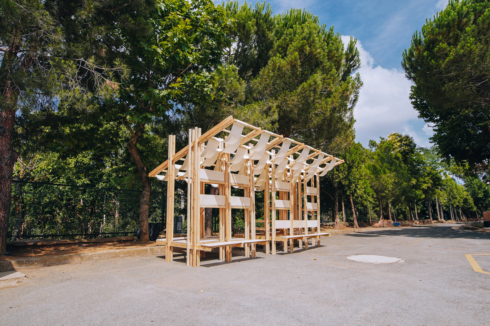
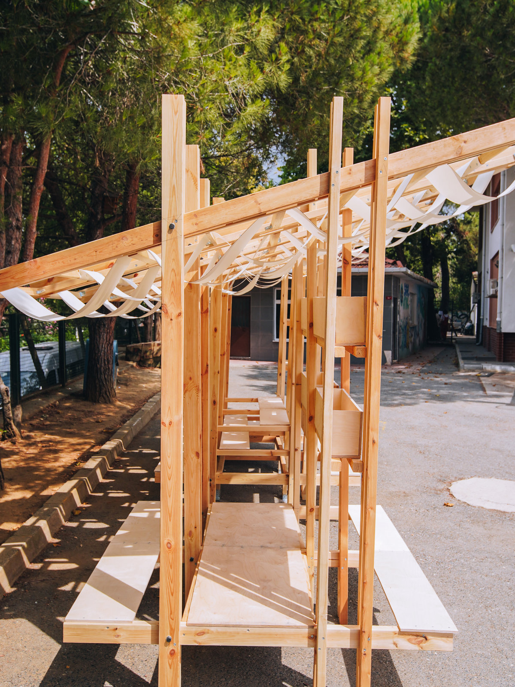
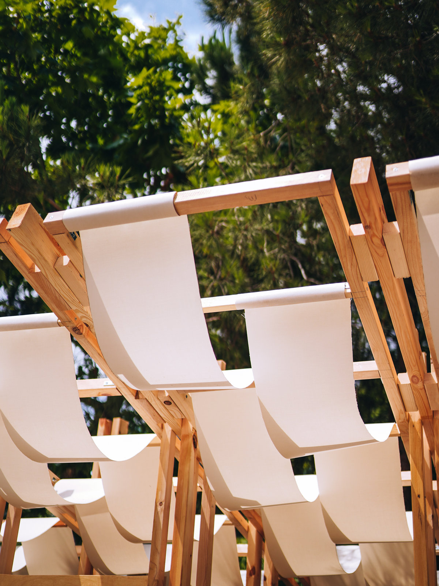
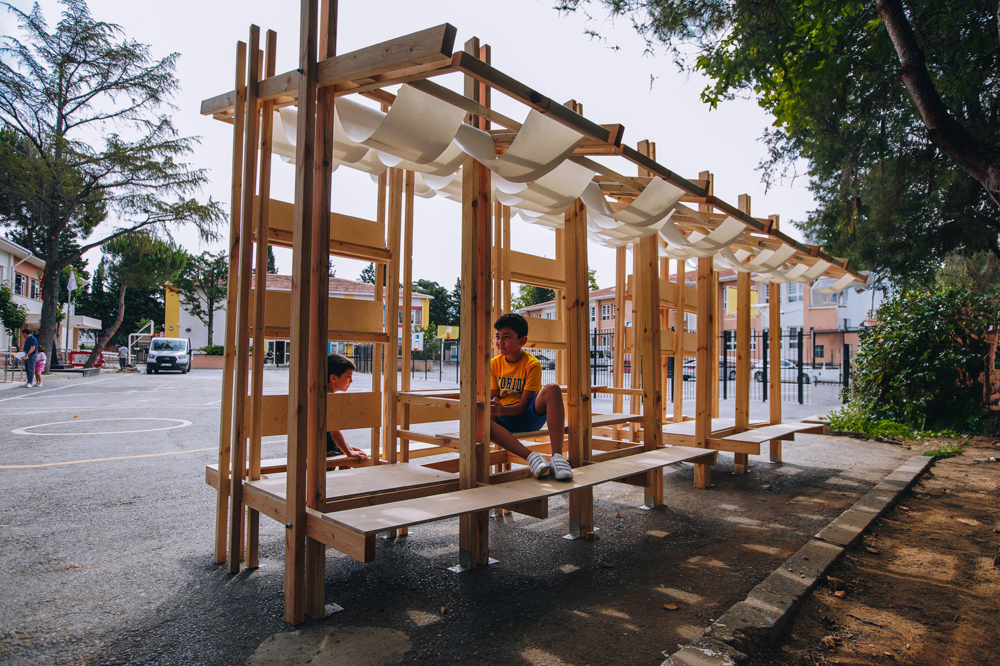

ARA SIRA
Designed and built by first-year architecture students from MEF University FADA as a dedicated resting and reading pavilion for the schoolyard of Lütfi Banat Primary School. Extending learning and relaxation directly into the courtyard, ara sıra bridges the transition between structured class periods and recess. The dual-facing timber installation creates vibrant active seating along the school’s ceremony grounds while nestling intimate, shaded reading alcoves against the perimeter garden trees.
Within the collective Design and Build! Studio team, contributed to site analysis and behavioral mapping, parametric and detailing development of modular timber benches and solar shading slats, 1:1 on-site timber fabrication, joinery, and physical erection in the school garden.

Primary school gardens are intense, multifaceted social ecosystems where moments of energetic play interlace with quiet pauses between classes. Situated in the schoolyard of Lütfi Banat Primary School in Beşiktaş, İstanbul, the site is defined by starkly contrasting boundary conditions: the dynamic sports and morning ceremony grounds in the front, mature trees and peaceful boundary walls along the back, the security booth on the left, and the school canteen on the right.
The project title “ara sıra” plays on the dual meaning of the Turkish terms: evoking both the temporal rhythm of school breaks (ders araları) and the familiar physical classroom desk and bench (sıra). By transposing the classroom desk out into the open air, the structure creates an inviting threshold where children can freely inhabit learning and leisure outside institutional walls.

Addressing the intense morning and afternoon sunlight that floods the playground, the front-facing volume incorporates an overhead slatted timber canopy. Below, broad stepped wooden platforms provide tiered seating sized for children’s ergonomic scales, offering front-row vantage points to watch basketball matches, gather with classmates during recess, or sit casually with teachers.

On the sheltered reverse side facing the garden trees, the pavilion transforms into an intimate outdoor library. Integrated wooden bookshelves house communal books and reading materials, while deep recess niches provide calm seating alcoves away from the bustle of the playground. Built-in planter boxes incorporate living flora into the timber framework, fostering tactile curiosity and environmental stewardship among students.


Carried out under the pedagogical framework of MEF University FADA’s signature “Design and Build! Studio” (Tasarla ve Yap! Stüdyosu), the project was fully realized at 1:1 scale by the first-year student team. Through rapid prototyping, detailing, precision timber cutting, protective oil application, and collaborative on-site erection, the students transformed digital drawings into a tangible, permanent civic gift for the elementary school community.

Ahsen Şahan, Beliz Bayar, Çağatay Feyzi Çakmakçı, Dicle Doğan, Doğa Kavuklu, Ecesu Önal, Elifsu Genç, Fırat Korkmaz, İlkay Berrak Sevinç, Nazar Şimşek, Pelin Lilioğlu, Pınar Çakar, Sezin Dalkıran, Tardu Rifaioğlu, Zeynep Ünal
Tutors: Eda Yeyman, İrem Naz Kaya
Project Assistants: Elif Buse Demirkaya, Umut Bozkurt
Institution: MEF University FADA (Faculty of Arts, Design and Architecture)
Material Sponsor: Koç Orman Ürünleri
Location: Lütfi Banat İlkokulu Bahçesi, Beşiktaş / İstanbul